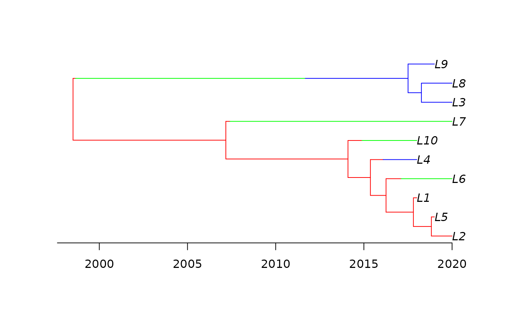
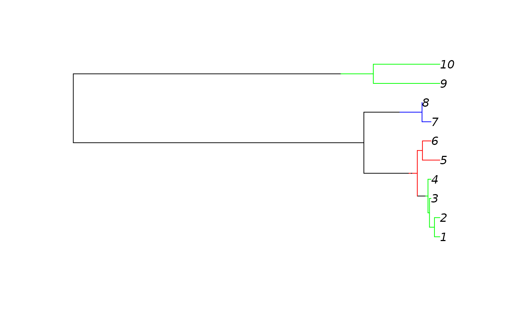
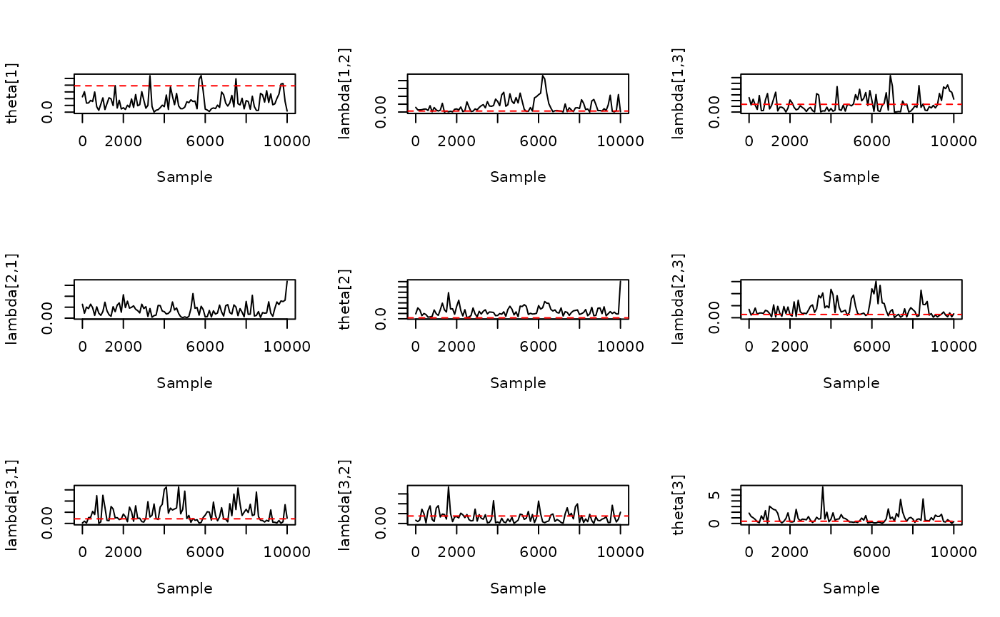
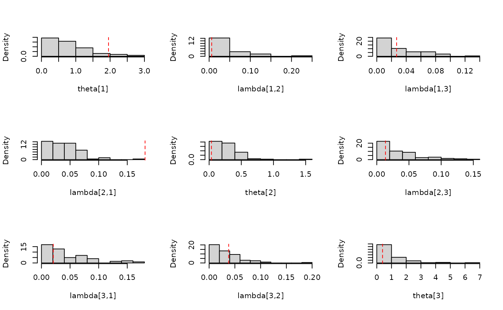

Basic MCMC Usage
Setting_up_MCMC.RmdExample
This is a basic example of usage. First, we sample a heterochronous dated structured phylogenetic tree with leaves obtained from from demes between 2015 and 2020.

Our simulated phylogeny is returned as an object of classstrphylo which can be passed directly into our MCMC
algorithm as an initialisation point. Alternatively, we illustrate how
to convert between a strphylo phylogeny and a
BEAST-annotated Newick string using the treeio package.
A strphylo phylogeny can be converted to a Newick string
via a treedata object as follows,
resulting in a Newick string
## (((((((L2[&type=1]:1.173559841,L5[&type=1]:0.173559841)[&type=1]:1.018941774,L1[&type=1]:0.1925016146)[&type=1]:1.551420165,(L6[&type=2]:2.888916888)[&type=1]:0.8550048914)[&type=1]:0.8860324419,(L4[&type=3]:1.910819747)[&type=1]:0.7191344737)[&type=1]:1.270947111,(L10[&type=2]:3.106935748)[&type=1]:0.7939655846)[&type=1]:6.925557613,(L7[&type=2]:12.59366215)[&type=1]:0.2327967944)[&type=1]:8.663322076,((((L3[&type=3]:1.738566852,L8[&type=3]:1.738566852)[&type=3]:0.7562937879,L9[&type=3]:1.49486064)[&type=3]:5.827259607)[&type=2]:13.02874437)[&type=1]:0.1389164082)[&type=1];We can then return from the annotated Newick string (with demes
annotated by type) to our original strphylo object as
follows
Note that we require textConnection() here to allow our
Newick string (stored as a character vector) to be passed as a file
connection into read.beast.newick(). Alternatively, a
Newick string can be passed in from an external file using the path to
the file.
Now that we have a structured phylogeny in strphylo
format to use for initialisation, we identify the prior parameters for
use in our MCMC. To use our default prior distributions, we can either
omit all prior parameters from our MCMC,
or we can pass prior parameters into the MCMC using in a mode-variance parameterisation of a Gamma distribution
## cr_shape cr_rate cr_mode cr_var mm_shape mm_rate
## 1.000000e+00 3.745767e+00 0.000000e+00 7.127194e-02 1.000000e+00 4.645352e+01
## mm_mode mm_var
## 0.000000e+00 4.634071e-04MCMC output consists of three files (by default added to current
working directory getwd()):
-
StructCoalescent.treescontains a thinned MCMC sample of dated structured phylogenies in a BEAST meta-commented Newick format, which can be read withtreeio::read.beast. -
StructCoalescent.logcontains a thinned MCMC sample of evolutionary parameters, likelihood evaluations and the current radius of the subtree in a csv format, which can be read withread.csv -
StructCoalescent.freqcontains details of the total number of accepted proposals of each type as well as the total number of attempted proposals of that type.
We can present a sample of migration histories using a consensus migration history, with sections of the branch assigned a deme provided a proportion of sampled migration histories observe the same deme at that position as follows:

Evolutionary parameter samples can be presented in a variety of ways including trace plots and histograms:
StructCoalescent_log <- read.csv('./StructCoalescent.log',
header=TRUE)
layout(matrix(1:d^2, d, d))
for (col_id in 1:d){
for (row_id in 1:d){
if (col_id == row_id){
col_name <- paste0('coal_rate_', col_id)
title <- list(paste0('theta[', col_id, ']'))
true_param <- coalescent_rates[col_id]
} else{
col_name <- paste('backward_migration_rate', row_id, col_id, sep='_')
title <- paste0('lambda[', row_id, ',', col_id, ']')
true_param <- migration_matrix[row_id, col_id]
}
plot(StructCoalescent_log$sample, StructCoalescent_log[,col_name], type='l', xlab='Sample', ylab=title)
abline(h=true_param, lty=2, col='red')
}
}
StructCoalescent_log <- read.csv('./StructCoalescent.log',
header=TRUE)
layout(matrix(1:d^2, d, d))
for (col_id in 1:d){
for (row_id in 1:d){
if (col_id == row_id){
col_name <- paste0('coal_rate_', col_id)
title <- list(paste0('theta[', col_id, ']'))
true_param <- coalescent_rates[col_id]
} else{
col_name <- paste('backward_migration_rate', row_id, col_id, sep='_')
title <- paste0('lambda[', row_id, ',', col_id, ']')
true_param <- migration_matrix[row_id, col_id]
}
hist(StructCoalescent_log[,col_name], xlab=title, freq=FALSE, main='')
abline(v=true_param, lty=2, col='red')
}
}